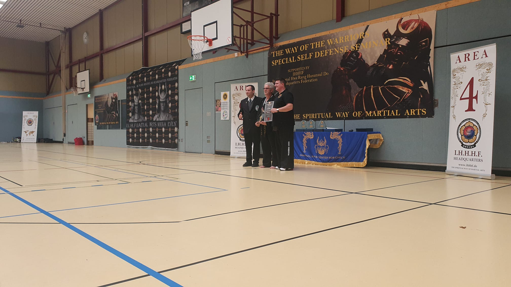

The Way of the Warrior´s Special Self-Defense Seminar
Am 02.10.2021 veranstaltete die I.H.H.H.F. in Arnsberg einen interdisziplinären Lehrgang, in dem über 40 (Groß)Meister in stündlichen Intervallen einen Einblick und ein kurzes Training in Ihren Kampfstil gaben.
Vertreten waren unter anderem Kick Boxen, Hapkido, Taekwondo, natürlich Kuk sool won und viele weitere. Solche Workshops eigenen sich Hervorragend um sich über die verschiedenen Stile, Vor- und Nachteile, aber insbesondere auch über die elementaren Gemeinsamkeiten, auszutauschen. Nach diesem Treffen gingen wir alle mit viel Input nach Hause und freuen uns auf die Wiederholung im nächsten Jahr. Teil des Lehrganges war außerdem die Ehrung des Lebenswerkes unseres Meisters Peter Griepentrog, der seit 30 Jahren im Budo-Sport tätig ist. Wir freuen uns für unseren Meister und hoffen, dass er uns noch weitere 30 Jahre in unserem Verein begleiten wird.